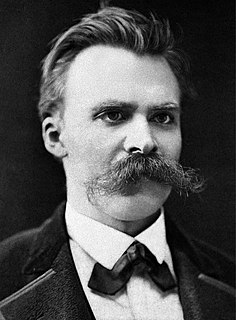

인생을 시작하는 건 우리의 선택이 아니지만,
인생 자체를 어떻게 살아갈지, 어떻게 시작할 것인지는 우리에게 달려 있습니다.
모든 일은 시작과 끝이 있기 마련, 우리는 지금까지도 많은 일들을 시작했을 것입니다.
하지만 늘 그렇듯이, 우리는 시작에 대해서 많은 두려움이 있죠.
왜 시작하지 않을까요? 왜 두려울까요?
그건 변화를 두려워하는 인간의 심리 때문이 아닐까요?
시작을 즐기고 도전을 즐깁시다.
시작 그 자체에도 많은 배움이 있기 마련,
시작하는 것을 두려워하지 않는 사람이 되기로 합시다.
이번 별은, 구름 뒤에 가려진 시작의 별입니다.
시작에 대해서 간단하게 알아봅시다.
"천리길도 한걸음 부터"
[미상]
“Why not change the world?
세상을 바꾸는 길을 걷지 않겠는가?”
[한동대학교 슬로건]
"최고에 도달하려면 최저에서 시작하라."
[푸블릴리우스 시루스]
"길이 막혔다면 원점으로 돌아가라.
미로에서 헤메느라 실마리를 찾지 못할 때는 초심으로 돌아가는 것이 의외로 색다른 발견을 가져다 줄 수 있다."
[쿠니시 요시히코]
"모든 것은 항상 시작이 가장 좋다"
[블레즈 파스칼]
"一年之计在于春，一日之计在于晨
한 해의 계획은 봄에, 하루의 계획은 아침에 하라
(시작이 중요하다 - 라는 뜻)"
[南朝·梁·萧绎《纂要》] 소역, 중국 남조 시대의 시인
"시작하는 방법은 그만 말하라. 이제 행동하는 것이다."
[월트 디즈니]
"응애."
[김은호, 2003 07 31, 그의 인생을 시작했을 때]
"텅 비고 아무것도 없어서, 그런 자신을 용서할 수 없으면─── 지금 여기서부터 시작하죠.
렘의 멈춰 있던 시간을 스바루 군이 움직여준 것처럼, 스바루 군이 멈춰있다고 생각하던 시간을 지금 움직이겠어요.
지금부터 시작하죠. 하나부터... 아니 제로부터!"
[RE:제로부터 시작하는 이세계 생활]-렘
"시작할 용기가 없는 자에게 성공은 사치다."
[김대헌, 김은호父]
"星星之火，可以燎原
: 작은 불씨가 온 들판을 태울 수 있다."
[마오주석 어록]-모택동(마오쩌둥)

"인생의 목적은 끊임없는 전진이다.
밑에는 언덕이 있고 냇물도 있고 진흙도 있다.
걷기 평탄한 길만 있는 게 아니다.
먼 곳을 항해하는 배가 풍파를 만나지 않고 조용히만 갈 수는 없다.
풍파는 언제나 전진하는 자의 벗이다.
차라리 고난 속에 인생의 기쁨이 있다.
풍파없는 항해, 얼마나 단조로운가!
고난이 심할수록 내 가슴은 뛴다."
[프리드리히 니체]